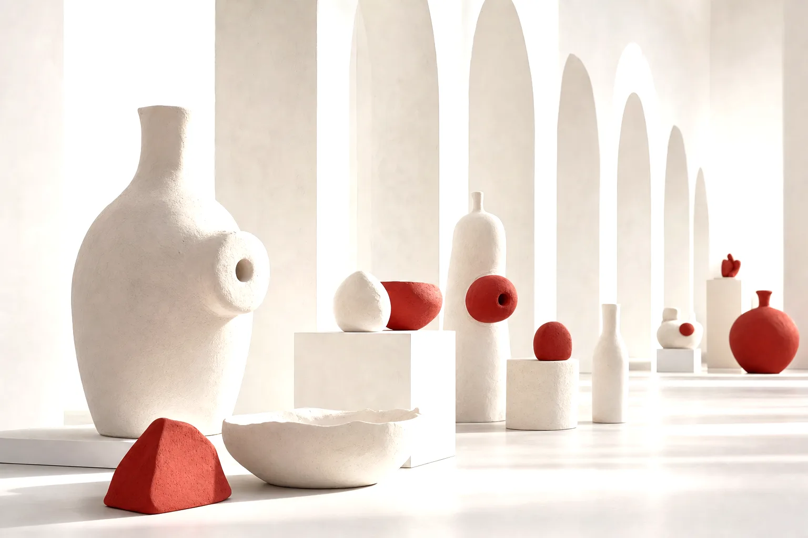

Built for
growth.
Move your mouse through the letters

Trusted by 200+ clients
Big names. Small businesses. Same focus.
Google reviews
Heard from clients.
FAQ
Questions, answered.
Built For Growth.
Tell us your objective. We'll bring the plan.